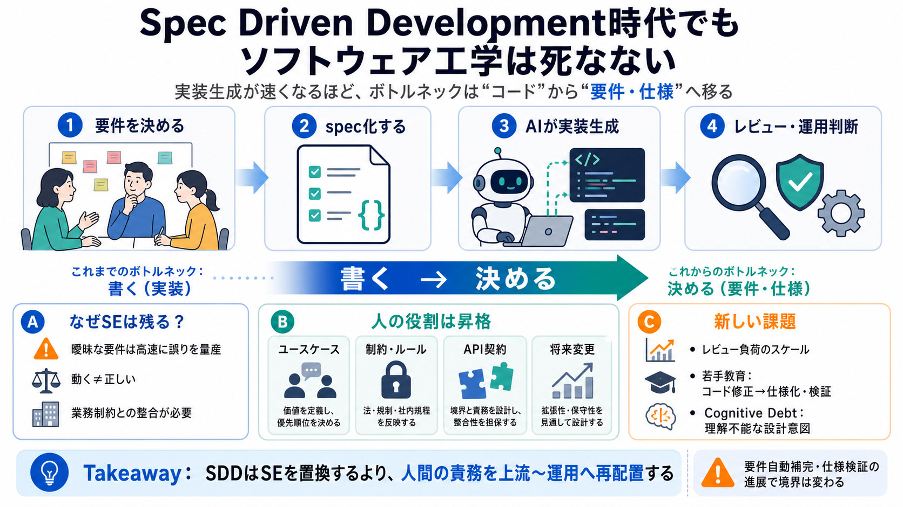

Software engineer will never die
Software engineering is a domain where developers will never become obsolete but must continually evolve, adapting to ne…

AIでも消えない
実装生成が速くなるほど、ボトルネックは「コード」から「要件・仕様」へ移る。
問う：置換？
従来の論点は「コーディング以外（要件・設計判断・レビュー・運用）が残る」だった。
SDD：契約中心
チャットの雑な指示ではなく、機械が解釈できる仕様（spec）を作り、開発を進める。
実装生成は得意
意図の曖昧さは苦手
結論：補強する
AIが実装コストを下げるほど、残る重心は「要件定義・ビジネスルール整合・仕様化」へ移る。
ボトルネック転換
曖昧な要件だと、AIは高速に誤りを量産しうる。だから“正しさの条件”を固定する作業が残る。
実装生成が加速（速い）
整合の難所が上流へ（移動）
承認・レビューが重要（残る）
役割の昇格
SDDでは、ユースケース・エッジケース・制約・データモデル・API契約・変更容易性の設計が要る。
意図を分解して書く
暗黙を明示する（仕様化）
入出力の境界を固定する
壊れにくさを設計に含める
動く≠正しい
未文書の業務制約に反していると、運用で障害になる。だからレビューが不可欠になる。
動作するコード（実装）
ビジネス制約との整合（要件）
認知的負債
コードが動いても、誰も理解できないと障害対応や改善が遅れる。運用で詰む。
設計意図の共有不足
原因分析・方針決定が遅延
別レイヤ観
コンパイラのように抽象化は進むが、人間による問題解決行為が消えるわけではない。
抽象化層（spec）を整える → 生成を支える“承認・レビュー”が残る → 結果としてSEの責任は上流〜運用へ広がる
残存領域
AIは実装を速くするが、要件の曖昧さを潰し、仕様を承認する責務は残りやすい。
要件・ビジネスルールの整合
仕様化（spec）とレビュー
運用での判断（設計意図の維持）
未解決点
仕様重視なら、若手は何を学び何を担当するのかが課題になる。さらにレビューのスケールもボトルネックになりうる。
コード修正→仕様化・検証へ
大量生成の短時間レビュー
条件付きの未来
要件の自動補完や仕様検証が進むと、ボトルネックの境界条件は変わりうる。よって「置換されにくい」に留めるのが安全。
自動検証・矛盾検出の進展度
速度・組織運用・品質保証の具体
実務へ翻訳
要件・仕様の検証をどこまで自動化できるか、レビューをどうスケールさせるか、そしてヒトの責務がどこに残るかを更新する。
形式手法・テスト自動生成・差分レビュー
承認プロセス、責任分界、監査性
段階的責務分解とテンプレ
法務・倫理（誤仕様の高速生成）
Takeaway
AIで実装は速くなるが、要件と仕様の整合・承認・運用理解が“形を変えて”残る。SDDはそれを前提に、人間の役割を再配置する。
英語 / 日本語用語：Spec Driven Development（仕様駆動開発: SDD）、spec（仕様）、Cognitive Debt（認知的負債）。
Software engineering is a domain where developers will never become obsolete but must continually evolve, adapting to ne…
Spec-driven Development: How AI Changed Everything (And Nothing), by Simon Martinelli Jfokus 12300 subscribers 6 likes 5…
| Why Software Engineering Will Never Die Revisited In The Age Of Spec Driven Development |. | The rise of Spec Driven D…
The rise of Spec Driven Development begs for a reassessment of the original thesis; are the principles of "why software …
AI coding tools produce code that looks clean but silently destroys your architecture. I've watched teams celebrate velo…